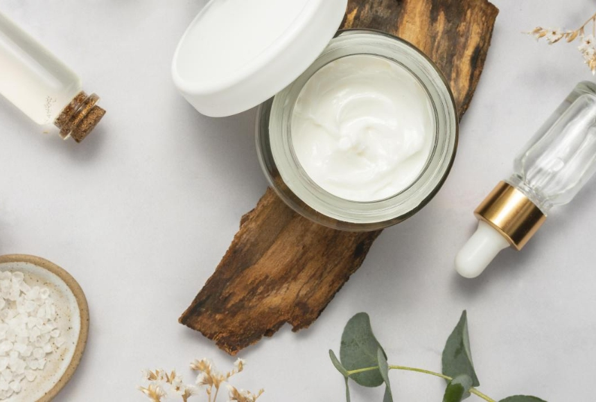

Industry Information
May. 28, 2025
In the ever-evolving world of skincare, ingredient awareness is no longer limited to chemists and formulators. Today’s consumers—especially those seeking clean, high-performance beauty—are reading labels, researching INCI lists, and questioning the presence of anything synthetic-sounding.
Cyclopentasiloxane is one ingredient that gets a lot of attention, it's a commonly used silicone that people often question: is cyclopentasiloxane safe? Is it good or bad for the skin?
In this article, we'll take an in-depth look at what cyclopentasiloxane is, its role in skincare products, and the pros and cons of it for your skin.

Cyclopentasiloxane, also known as D5, is a type of volatile silicone used widely in personal care and cosmetic formulations. It is part of the siloxane family, characterized by their repeating silicon-oxygen (Si-O) backbone.
Unlike heavier silicones like dimethicone, cyclopentasiloxane is lightweight and evaporates quickly after application, making it ideal for delivering a smooth, silky feel without any greasy or sticky residue. It’s odorless, colorless, and leaves behind a soft-focus finish—traits highly desirable in modern skincare formulations.
Due to its unique texture and functional versatility, cyclopentasiloxane appears in a wide range of personal care products:
Makeup primers : for smoothing the skin’s surface and filling in fine lines.
Facial serums and moisturizers : improves spreadability and helps deliver actives evenly.
BB/CC creams : enhances lightweight coverage while maintaining a non-cakey texture.
Sunscreens : makes high-SPF formulas feel less heavy or greasy.
Anti-aging creams : imparts a velvety finish while temporarily “blurring” wrinkles.
Hair serums and sprays : reduces frizz and adds shine without weighing hair down.
Many formulation professionals favor cyclopentasiloxane for products where texture, fast-drying, and elegance are key performance indicators.
The benefits are both sensory and functional:
Silky Application: Creates a smooth glide during application, improving the user experience.
Non-Comedogenic: Contrary to popular belief, it does not clog pores and is generally safe for acne-prone skin.
Temporary Barrier: Forms a breathable film that helps retain moisture without trapping dirt or sweat.
Enhances Delivery: It can help active ingredients penetrate evenly before evaporating from the skin.
Stable and Compatible: Works well with a wide range of emollients, antioxidants, and UV filters.
In an industry that thrives on innovation, cyclopentasiloxane helps bridge the gap between high-performance formulation and comfortable, lightweight skin feel.
As popular as it is, cyclopentasiloxane has drawn criticism from certain environmental and clean beauty advocates.
Environmental Impact: The European Chemicals Agency (ECHA) has classified D5 as a “Substance of Very High Concern” (SVHC) due to its persistence in aquatic environments. It is now restricted in rinse-off products above 0.1% concentration in the EU.
"Non-Natural" Ingredient: Clean beauty movements often reject all silicones, regardless of their safety profile.
Misconceptions: Some consumers believe it suffocates skin or causes buildup, though evidence suggests otherwise for leave-on formulations.
It’s important to note that these concerns are largely regulatory and environmental, rather than dermal safety issues.
Dermatologists and cosmetic chemists mostly agree: cyclopentasiloxane is safe for use in topical skincare.
“Cyclopentasiloxane is non-irritating, doesn’t clog pores, and is well tolerated even by sensitive skin,” says Dr. Amanda Reyes, a board-certified dermatologist. “It’s often confused with heavier silicones, but it behaves very differently.”
Scientific data shows minimal skin penetration and rapid evaporation, reducing the risk of bioaccumulation on the skin. Cosmetic formulators also emphasize that when used in proper concentrations, cyclopentasiloxane improves efficacy and consumer satisfaction without compromising skin health.
If you prioritize skin performance, texture, and efficacy, there's no solid reason to avoid cyclopentasiloxane. However, if your values lean toward eco-consciousness or strictly plant-based formulations, you might choose to opt for alternatives.
Ultimately, the key is informed choice, not fear.
Cyclopentasiloxane may sound complex, but its role in skincare is simple: it makes products feel amazing without harming your skin. With the right formulation strategy and transparent communication, brands can still use this ingredient responsibly while meeting customer expectations.
So next time you spot cyclopentasiloxane on a label, don’t rush to judge—consider what it does and how it fits into the bigger picture of skin health and product performance.

Goliath Ingredients Holding Limited
1st Floor, Ellen Skelton Building, 3076 Sir Francis Drake’s Highway, Road Town, Tortola, VG1110, British Virgin Islands.
henry@goliathholding.com
Navigation
Email: henry@goliathholding.com